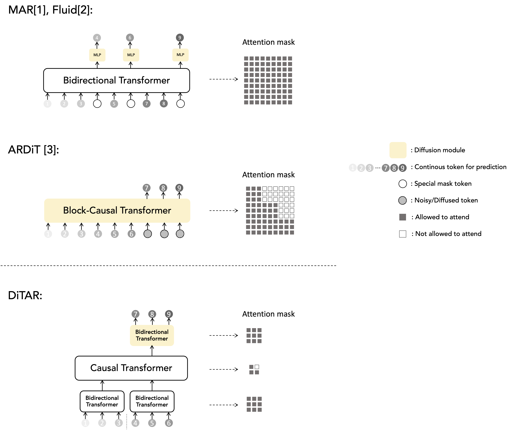

DiTAR:
Diffusion Transformer Autoregressive Modeling for Speech Generation
Dongya Jia, Zhuo Chen, Jiawei Chen, Chenpeng Du, Jian Wu, Jian Cong, Xiaobin Zhuang, Chumin Li, Zhen Wei, Yuping Wang, Yuxuan Wang
ByteDance Seed
Abstract. Several recent studies have attempted to autoregressively generate continuous speech representations without discrete speech tokens by combining diffusion and autoregressive models, yet they often face challenges with excessive computational loads or suboptimal outcomes. In this work, we propose Diffusion Transformer Autoregressive Modeling (DiTAR), a patch-based autoregressive framework combining a language model with a diffusion transformer. This approach significantly enhances the efficacy of autoregressive models for continuous tokens and reduces computational demands. DiTAR utilizes a divide-and-conquer strategy for patch generation, where the language model processes aggregated patch embeddings and the diffusion transformer subsequently generates the next patch based on the output of the language model. For inference, we propose defining temperature as the time point of introducing noise during the reverse diffusion ODE to balance diversity and determinism. We also show in the extensive scaling analysis that DiTAR has superb scalability. In zero-shot speech generation, DiTAR achieves state-of-the-art performance in robustness, speaker similarity, and naturalness.
Contents
System Overview
Figure 1. DiTAR is composed of an aggregation encoder for input, a causal language model backbone, and a diffusion decoder, LocDiT, predicting local patches of tokens.
Comparison with other autoregressive diffusion works

Figure 2. Different systems have varying design philosophies. MAR and DiTAR offload the computation of diffusion to the diffusion head, while ARDiT applies diffusion throughout the entire model. DiTAR structurally resembles a causal language model and becomes a continuous-valued LLM when scaled.
[1] Li, Tianhong, et al. "Autoregressive image generation without vector quantization." Advances in Neural Information Processing Systems 37 (2024): 56424-56445.
[2] Fan, Lijie, et al. "Fluid: Scaling autoregressive text-to-image generative models with continuous tokens." arXiv preprint arXiv:2410.13863 (2024).
[3] Liu, Zhijun, et al. "Autoregressive diffusion transformer for text-to-speech synthesis." arXiv preprint arXiv:2406.05551 (2024).
Audio Samples with Highly Expressive Prompts
Zero-Shot Text-to-Speech
| Prompt | Generated audios by DiTAR |
|---|---|
Lastly, drizzle some high-quality balsamic glaze over the dish, adding a piquant twist to balance the rich and hearty flavors. Whether you are a food enthusiast or a novice cook, this dish never fails to impress. Enjoy your meal! | |
Continual advancements in engineering and construction techniques will maximize durability while still promoting eco-consciousness. As we move forward, we aim to incorporate more green technologies, transforming the way we build and defining the future of sustainable architecture. |
|
So, I keep reaching out, keep believing, undeterred by the obstacles. Sure, the journey's challenging, but I've learned that persistence pays. After all, even the grandest castle starts with a single stone, right? |
|
I don't really care what you call me. I've been a silent spectator, watching species evolve, empires rise and fall. But always remember, I am mighty and enduring. Respect me and I'll nurture you; ignore me and you shall face the consequences. |
|
Despite their confused looks, I let out a hearty laugh. "Trust me to bring some lightness to the heaviest subjects, won't you?" I see them shake their heads, their eyes glittering with amusement. Ah, life is nothing without a little humor! |
|
Their eyes softened with understanding. "I can't promise perfection," I tell them, my eyes pleading for patience, "but I can promise effort. And perhaps, over time, my foreign words will start to sound a little more like home to your ears." |
|
Perhaps they are driven by the delicious blend of flavors, or it could be the appealing visual presentation. At the end of the day, our choices in food reflect our personal preferences and sometimes, even our lifestyle or belief system. |
|
The combinations of different textures and flavors create a perfect harmony. The succulence of the steak, the tartness of the cranberries, the crunch of pine nuts, and creaminess of blue cheese make it a truly delectable delight. Enjoy your culinary adventure! |
|
There it is! A massive shockwave from Orianna! The crowd goes wild as the team secures dragon and extends their lead. Exceptional play, keeping us on the edge of our seats! |
|
We've carefully curated these products, considering various skin types and individual needs. So, whether you're a skincare newbie or a seasoned veteran, there's something for everyone. Let's dive right in and explore these beauty gems together! |
|
Okay, let's take a step back and breathe. I understand we may not see eye to eye on this, but that's the beauty of dialogue. We can agree to disagree and still maintain a respectful conversation. Please remember: everyone's allowed their opinion. |
|
Wow, sounds like there are a lot of unresolved issues here. Let's try to remember that communication is key. If we can't be honest with each other, we're never going to solve our problems. Time to face the music and talk things through. |
|
Dealing with family secrets is never easy. Yet, sometimes, omission is a form of protection, intending to safeguard some from the harsh truths. One day, I hope you understand the reasons behind my actions. Until then, Anna, please, bear with me. |
|
Your safety and the pack's reputation are at stake. Your bravery is admirable, but sometimes bravery is knowing when to retreat. Please, consider returning with me. We can work out a plan, but only if you're willing to listen. |
Audio Samples on LibriSpeech Test-Clean
Zero-Shot Text-to-Speech
| Prompt | Ground truth | E2TTS | F5TTS | DiTAR |
|---|---|---|---|---|